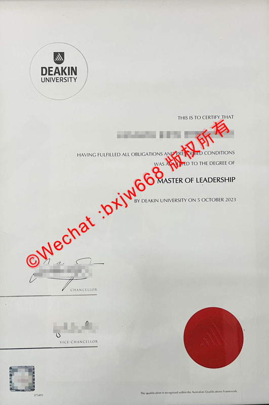

加拿大约克大学学位证（York University Diploma）文凭样式解析
对于在加拿大留学的学子而言，约克大学（York University）不仅是加拿大规模第三大的顶尖综合性公立大学，更是无数人梦寐以求的学术殿堂。当毕业生顺利修满学分、通过考核后，所获得的约克大学学位证书（Diploma）便是其多年寒窗苦读的最佳见证。

本文将基于约克大学官方颁发的真实硕士学位证书样本，从视觉排版、核心文字框架、纹章与印章工艺、防伪技术细节等多个维度进行全方位、深层次的独家解析，帮助大家清晰了解这所北美名校文凭的独特设计美学与防伪权重。
约克大学毕业证外观与纸张规格
1. 整体视觉印象
约克大学的学位证书整体呈现出一种极简而庄重的北美学术风格。它没有采用部分欧洲高校繁复的巴洛克边框设计，而是选择大面积留白，通过优雅的字体排列和标志性的色彩点缀（如左下角耀眼的红印），彰显出现代高等教育机构的严谨与权威。
2. 纸张材质与特殊规格
- 纸张类型：官方文凭采用的是定制的高克重高白/奶白色特种卡纸（Premium Diploma Stock）。这种纸张表面带有微细的哑光特殊肌理，不仅吸墨性极佳，而且具有抗老化、不易变黄的物理特性。
- 证书尺寸：通常采用北美标准的文凭尺寸（如 11 x 14 英寸或接近 A3 尺寸），整体比国内常见的 A4 毕业证更为宽大，便于装裱与长期保存。
York University文凭核心排版布局与文字框架
通过对上方真实样本的观察，约克大学学位证的文字信息由上至下呈现出清晰的逻辑层级：
1. 学校名称（University Name）
位于证书正上方居中位置，采用经典的衬线体（Serif Font）大写字母印制：
YORK UNIVERSITY 字形浑厚，间距舒展，具有强烈的视觉冲击力和历史厚重感。
2. 授予宣告（The Conferring Clause）
紧随校名下方，是一行较小的说明文字，明确了学位的授予主体及地理位置：
The Chancellor and Senate of York University in Toronto, Canada, confer on （位于加拿大托伦托的约克大学校长与参议院，特授予……）
3. 毕业生姓名（Graduate's Name）
位于宣告下方核心区域（样本中进行了模糊处理）。官方通常会使用加粗的无衬线体或现代手写风字体单独印制毕业生法定英文姓名，确保主体身份一目了然。
4. 院系与修读声明（Faculty & Fulfillment Statement）
在姓名下方，进一步阐述该生已满足毕业的所有法定要求：
who has completed to the satisfaction of the Faculty of Graduate Studies all the requirements of the course of study appointed by the statutes of the University, the degree of （该生已圆满完成研究生院规定的、大学章程所要求的全部课程修读要求，特授予……学位）
5. 学位名称与专业（Degree & Major）
这是整张证书最核心的部分。为了突出学位的重要性，约克大学在此处打破了黑墨印刷的常规，采用了深红色/玛瑙红（York Red）进行强调，并使用了极具艺术感的英式手写体（Italic Script）：
Master of Disaster and Emergency Management （灾难与应急管理硕士） 这种红黑撞色的设计，既契合了约克大学的官方代表色（York Red），又让学位的核心信息在视觉上瞬间脱颖而出。
6. 权利赋予与日期声明（Rights & Date）
and grant all the honours, rights and privileges which appertain to this degree. （并赋予该学位所享有的一切荣誉、权利与特权。） 下方则注明了具体的毕业月份与年份（例如：April 2023）。
约克大学学位证防伪工艺与核心图腾解析
加拿大高校对文凭防伪有着极高的要求，约克大学的学位证防伪体系主要通过官方校徽、激光或齿轮红印、高管亲笔签名以及底部发行代码来实现。
| 防伪要素 | 具体位置 | 工艺与视觉特征 |
|---|---|---|
| 校徽图腾 (Coat of Arms) | 证书左上角 | 带有格言的盾徽，采用高精度灰色原图层印刷，细节纤毫毕现。 |
| 锯齿红印 (Red Seal) | 证书左下角 | 标志性烈焰红齿轮印章，多重防伪叠加，边缘锐利。 |
| 高管签名 (Signatures) | 证书正下方 | 校长（Chancellor）与副校长（President and Vice-Chancellor）组合签名。 |
| 版本代码 (Issued Code) | 证书最底部居中 | 微型字体印制落款时间及版本编码，如“Issued June, 2023”。 |
1. 左上角：约克大学官方校徽（Coat of Arms）
校徽由盾牌、双生白玫瑰以及下方的拉丁文缎带组成。 * 白玫瑰：象征着约克郡（Yorkshire）的白玫瑰历史渊源。 * 校训缎带：下方缎带上印有约克大学的拉丁文校训 “TENTANDA VIA”（意为：The way must be tried / 必须不断尝试）。在正规文凭上，校徽的线条极为细腻，即使是微小的字母在放大镜下也绝不模糊。
2. 左下角：标志性锯齿红印（Red Seal）
这是约克大学毕业证最具辨识度的防伪特征。该红印呈现鲜艳的东方红/烈焰红，边缘带有密集的太阳芒状锯齿（齿轮状）。在部分高端定制或特定年份的文凭中，该红印会配合重力钢印（Embossed Seal）工艺压印，使得纸张背面有明显的凹凸感，正面触摸则有明显的立体浮雕感。
3. 正下方：校长与副校长双重签名
证书底部并排排布着两位学校最高领导者的签名： * 左侧：CHANCELLOR（大学校监/校长） * 右侧：PRESIDENT AND VICE-CHANCELLOR（校长兼副校监） 正式文凭的签名均采用高清矢量电子墨水压印，完美还原了手写笔迹的枯笔与力度变化，防伪级别极高。
如何辨别加拿大约克大学毕业证的真伪？
随着跨境留学服务的发展，了解如何鉴别海外文凭真伪成为了各大企业 HR 及学术机构的必备技能。鉴别约克大学文凭可遵循“三步法”：
- 看色彩与套印：正品文凭的专业名称“Master of...”必须是纯正且饱和度极高的约克红，不能有杂色或偏色；左下角红印与文字不能有重叠造成的晕染。
- 摸质感与边缘：正品特种纸用手抚摸有微微的涩感和厚重感，四周切割边缘光滑无毛刺。
- 核对物理日期与发行码：证书最底部通常有一行极其微小的落款时间（如 Issued June, 2023），其年份月份必须与证书正文中的毕业时间相互吻合，且字体规格极小，普通复印机极易出现断线或糊字现象。
结语
加拿大约克大学的学位证书（York University Diploma）不仅是一张纸，它融合了高规格的设计美学与严密的防伪技术，体现了北美顶级学府对学术成果的尊重。通过本文对该样本的排版、文字、颜色及防伪红印的深度拆解，相信大家对约克大学的文凭样式有了更为直观和专业的认知。